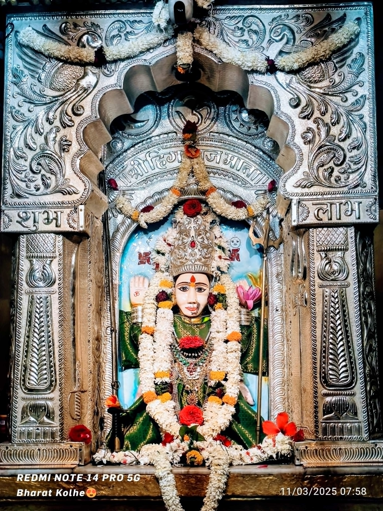

श्री हिंगलाज देवी माता खेडे येथे येण्यामागे आख्यायिका मोठी रंजक व जिज्ञासा वाढविणारी आहे, त्याबाबत श्री हिंगलाज देवी माता ट्रस्ट
चे उपाध्यक्ष श्री त्र्यंबकराव जेऊघाले यांनी दिलेल्या माहितीनुसार, पाकिस्तान व बलुचिस्थान सिमेवर असणाऱ्या हिंगोल नदीकाठी मक्रान पहाडावर
श्री हिंगलाज मातेचे जागृत स्थान आहे.लाखो भाविक नेमाने देवीच्या दर्शनासाठी येत, त्यातील डोंगरपुरी नावाच्या भक्ताने वयाच्या ९५ व्या वर्षापर्यंत
श्री हिंगलाज मातेची सेवा केली परंतु आपण थकल्याने श्री हिंगलाज मातेला आपल्या नगरात घेऊन जाण्याचा निश्चय त्यांनी केला त्यासाठी श्रध्देने उपासना
करुन डोंगरपुरी महाराजांनी श्री हिंगलाज मातेस आपल्या भक्तीच्या ओढिने नगरात घेऊन
जाण्याची खुणगाठ बांधली डोंगरपुरी महाराजांनी श्री हिंगलाज मातेस आपल्या अगाध भक्तीने प्रसन्न करुन घेतले.
श्री हिंगलाज मातेस डोंगरपुरी महाराजांनी आपल्या नगरात येण्याचा वर मागितला त्याप्रमाणे डोंगरपुरी महाराजांची भक्ती व
कठीण तपश्चर्या पाहून श्री हिंगलाज माता डोंगरपुरी महाराजांसोबत येण्यास तयार झाली मात्र श्री हिंगलाज मातेने डोंगरपुरी महाराजांना
अट घातली कि मी तुझ्याबरोबर येईल मात्र तुझे ठिकाण येईपर्यंत जर तु मागे वळून पाहिलेस तर मी त्याच ठिकाणी स्थानापन्न होईल.
डोंगरपुरी महाराजांनी श्री हिंगलाज मातेची अट मान्य करत प्रवास सुरु केला डोंगरपुरी महाराज पुढे श्री हिंगलाज माता मागे असा पश्चिमेकडुन पुर्वेकडे प्रवास
सुरु झाल्यावर वाटेमध्ये बर्याच तिर्थक्षेत्राचे दर्शन घेत मार्गक्रमन करत करत त्र्यंबकेश्वर,नाशिक, पिंपळगांव मार्गे कारस गावी (सध्याचे खेडे) आले असता
तेथुन वाहणाऱ्या विनता नदीला महापुर आला होता. आता आपण व देवी पलीकडे कसे जाणार ? का दुसऱ्या मार्गाने जावे ? अशा नानाविध प्रश्नांची मनाशी
उत्तर देत डोंगरपुरीजी महाराज उभे होते याबाबत श्री हिंगलाज मातेचा विचार घ्यावा, म्हणुन डोंगरपुरी महाराजांनी थोडीशी मान वळवली असता श्री हिंगलाज मातेचा दिव्य प्रकाश एकाच जागेवर स्थित झाला.
मागे वळून बघण्याची चुक त्यांच्या लक्षात आली. डोंगरपुरीजी महाराज खुप दु:खी झाले. त्यांनी मनाला सावरत निर्णय घेतला. आता देवी येथे राहणार असणार तर मी नगरी कशास जाऊ ? म्हणून त्यांनी ग्रामस्थांच्या मदतीने देवीची यथायोग्य
प्राणप्रतिष्ठा करून घेतली. दगडी चिरे वापरून हेमांडपंथी रचनेत स्वतः शके १२०० मध्ये मंदिर
उभारणी केली खेडे येथील श्री हिंगलाज मातेची मुळ मुर्ती काळ्या पाषाणाला चिकटुन असुन ज्योतिर्लिंग स्वरुप हिंगलाज मातेला तिसरा डोळा आहे. मातेला चार भुजा असुन चंद्र,सुर्य व त्रिशुल आहे व एका हाताने आशिर्वाद देत आहे.
श्री हिंगलाज मातेची सेवा केल्यानंतर बर्याच वर्षांनी डोंगरपुरी महाराजांनी हिंगलाज मातेच्या मंदिरासमोर विनता नदी तिरावर संजीवन समाधी घेतली . त्यावरील बांधकाम हे संभाजी मोरयाजी कुलकर्णी यांनी मौजे खेडेत (कारसात) बांधुन दिले.
स्थापत्य शास्त्राचा एक उत्तम नमूना असणाऱ्या या समाधी स्थानाची रचना अतिशय सुक्ष्म रितीने कले असुन नक्षीदार बांधकाम आहे. मंदीर हेमाडपंथी रचनेचे असुन चिरेबद्ध आहे.
समाधीस्थानावर महादेवाची पिंड व द्वारपाल म्हणुन नंदीचे प्रतिक आहे समाधी स्थानावर एक जुना शिलालेखही आहे . विनिता नदीतीरी असलेल्या या मंदिराला अवश्य भेट दयावी.
।। श्री हिंगलाज देवी माता महिमा ।।
महाराष्ट्र एक संताची भूमी अन् महाराष्ट्राला संताचा वारसा लाभला हे याचेच एक भाग्य. ह्याही पलिकडे गेलो तर बरेचशे तिर्थक्षेत्र ही महाराष्ट्रातच आहे अशाच महाराष्ट्रातील देवांचे वास्तव्य असलेला एक जिल्हा नाशिक.
नाशिक एक कुंभमेळ्याचे ठिकाण. तसेच ज्योतिर्लिंग त्र्यंबकेश्वर ही एक पवित्र गोदातिर्थ. संत ज्ञानेश्वरांचे गुरु बंधु श्री संत निवृत्तीनाथ महाराजांची समाधी व आद्य जोतिर्लिंग त्र्यंबकेश्वर येथेच आहे. वर डोंगरावरती निलांबीका देवीचे स्थान आहे.
निफाडमध्ये नैताळे येथील मतोबा महाराज मंदिर, चांदवडची रेणुका माता ,ईच्छापुर्ती गणेश मंदीर व होळकरांचा रंगमहाल, नांदुर्डी येथील वरदविनायक
गणेश मंदीर,कोटमगांवची (येवला) जगदंबा, लासलगांवचे भगरीबाबा समाधी मंदिर तसेच लोणजाई माता मंदीर ही जवळच आहे.
खडकओझरची केद्राई माता, चारण लोकांची कुलदैवत असलेली वडांगळीची सतिमाता, सामतदादास्थान, नासिकचे काळाराम मंदिर, गोराराम मंदिर, कपालेश्वर मंदिर, पंचकेश्वर येथील पंचमुखी महादेव मंदिर व खेडे येथे श्रीसंत हरिहर बाबा यांचे समाधी मंदिर आहे. व आद्यशक्तीपिठ श्री सप्तश्रृंगीमाता जिथे मार्कंडेय
ऋषींनी सप्तशती सातशे श्लोकी लिहीली व ती सप्तशती नावाने ओळखली गेली. नांदुरमध्यमेश्वर एक शिवतिर्थ, अभयअरण्य व श्रीरामप्रभुंचे अस्तित्व सहीत मृगव्याधेश्वर मंदिरही येथे आहे
येथुनच श्रीरामाने हरणाला बाण मारला होता अशी नानाविध क्षेत्रे नासिक जिल्ह्याला लाभली. असेच एक *शक्तीपिठ नाशिक जिल्ह्यातील निफाड तालुक्यापासून अवघ्या ६ ते ७ किलोमिटर अंतरावर उगांव नजिक खेडे ( हिंगलाजनगर) येथे आहे. विनता नदी पुलावरून सरळ पुढे आले की श्री हिंगलाज मातेचे मुळ पुरातन मंदिर असुन ही माता बावन्न पिठांपैकी एक आहे.
तसेच जागृत शक्तिपीठ म्हणून ओळखले जाते.
=
।। मुळ शक्तीपिठ ठिकाण ।।
भारत व पाकिस्तान या देशांची फाळणी झाल्यामुळे आता हे शक्तीपिठ पाकिस्तानमधील लियारा, तालुका लालबेला, प्रांत बलुचिस्थान म्हणजे पाकिस्तान कराची
पासुन ५१३ किलोमिटर अंतरावर तसेच सिंधु नदीच्या मुखापासुन १२२ किलोमिटर पश्चिमेस व अरबी समुद्रापासुन १८ किलोमिटर उत्तरेस पहाडातील अंधाऱ्या गुहेत आहे.
तेथील पुजारी मुस्लिम असुन हिंदु व मुस्लिम असेही तिचे भक्त आहे.
काळाप्रमाणे संस्कृतीचा लोप होत गेला व काळाच्या प्रवाहात बरेच काही नष्ट झाले, परंत श्री हिंगलाज मातेचे मंदिर हिंदु संस्कृतीचे प्रतिक म्हणुन आजही दिमाखाने उभे आहे.
फाळणीनंतर झालेल्या उद्रेकात अनेक मंदिरांची पडझड झाली परंतु या मंदिराचे काही नुकसान झाले नाही. येथील मुस्लिमांनीच येथील मंदिराचे रक्षण केले. स्थानिक मुस्लिम तर त्यांचे कोणतेही धार्मिक संस्कार
करण्यापुर्वी या देवीचे दर्शन घेतात. यात्रेच्या वेळी हिंदुपेक्षा मुस्लिमच अधिक असतात अन् याच यात्रेला मुस्लिम नानीका हज असे म्हणतात.
ह्या देवीला लाल चुनरी, अत्तर, धूप व कापूर लावून पूजा करतात. तिथे आरती उलटी ओवाळण्याची प्रथा आहे. देवीला नैविद्य म्हणुन लाप्सी,
फळे, सुका मेवा अर्पण करतात. अशी पूजा हिंदु, मुस्लिम रोज न चुकता करतात, शेवटी भूमीची फाळणी झाली तरी भक्तांच्या श्रद्धेची फाळणी
झाली नाही याची साक्ष आजही हे मंदिर देत आहे.
श्री हिंगलाज देवीचे मंदिर हिंगोल नदीचे तिरावर मक्रान पर्वताच्या टेकड्यावर व सुमारे ३७०९ फुट उंचीवर आहे. पर्वताच्या एका खडकाच्या कपारीत लांब
अंतरावर देवी बसलेली आहे. गुफेचे द्वार खुप मोठे आहे. साधारतः ५० ते ६० फुट उंचीचे असावे.
गुफेतुन बाहेर पडण्याचा मार्ग व आत जाण्याचा मार्ग अंधाराचा आहे. देवीच्या आजूबाजूला दोन घुमट बांधले आहे. समोर दोन कठडेही बांधले आहेत. शेंदुर चर्चित काठ्याही तेथे आहे.
गडद अंधाराने छत दिसत नाही त्यामुळे सर्वांना वाकून सरपटत दर्शनासाठी जावे लागते. रात्री १२ नंतर देवीस स्नान घातले जाते. जरीची चूनरी चढवली जाते, मातेची मुर्ती अनंतशयन रुपाची
असुन शय्यारुढ अवस्थेत आहे. तेथे धूप, दिप लावून वातावरण पवित्र करुन देवीला फुलहार, नैविद्य दाखवला जातो. देवीच्या मस्तकावर चांदीची छत्री टांगलेली आढळते. तसेच तेथे त्रिशुळ शेंदुर
लावून जवळच उभा आहे. मंदिराच्या आसपास सुर्य, चंद्र, महिषासूर यांची स्थाने आहेत. ह्या देवीला कोणी हिंगलाज माता, कालीमाता, महामाया, नानीबीबी, शाकंभरीदेवी अशा अनेक नावांनी ओळखतात.
रामाने रावणाला मारल्यानंतर ब्रम्हहत्तेचे पातक नष्ट करण्यासाठी स्वतः
श्रीराम प्रभुंनीही हिंगलाज देवीची पूजा केली होती व हिंगोल नदीत ज्वारीचे दाणे टाकले होते ते दाणे लाह्या बनुन वर आले व त्यांना ब्रम्हहतेतून मुक्ती मिळाली होती.
आजही ती दाणे यात्रेकरु जमा करतात. ती दाणे पूजेमध्ये शुभ मानली असल्यामुळे पुजेसाठी देवघरात ठेवतात. काही जण तीच दाणी रत्न
म्हणुन अंगात धारण करतात. ही दाणे पाण्याच्या बाहेर काढल्यानंतर दगडासारखी कठीण बनतात म्हणुन त्याची माळ पाण्यातच बनवावी लागते.
ह्या देवीचे दर्शन कोणाच्याही सहज नशीबात नसते. सुरुवातीला येथे जाण्याआधी तेथील समुद्रामध्ये एक नारळ सोडावा लागतो. तो नारळ पाण्यामध्ये
बुडला तरच त्या देवीच्या दर्शनाला जाण्याची आपल्याला परवानगी मिळाली असे समजतात.
परंतू जर नारळ पाण्यावर तरंगला तर तेथुनच परत घरी माघारी यावे लागते पण अतोनात भक्ती असेल व मातेला भेटण्याची इच्छा असेल तर जन्मापासुन तर आजपर्यंत केलेल्या पापांचा सर्वांदेखत मोठ्याने स्विकार करावा लागतो असे केल्यानंतर कदाचीत नारळ बुडतो परंतु तरीही बुडला नाही तर घरी माघारी यावे लागते.
परवानगी मिळाल्यानंतर सुरुवातीला प्रथम गणपतीचे दर्शन घ्यावे लागते. ह्या गणपतीला सरकटा गणेश असे म्हणतात. शंकराने क्रोधाच्या भरामध्ये पार्वतीच्या तेज रुपाचे म्हणजे गणपतीचे शिरच्छेदन केले होते हे शीर जिथे जाऊन पडले ती ही जागा अन् म्हणुनच या गणपतीला सरकटा गणेश ह्या नावाने ओळखले जाते. नदी
ओलांडून पुढे गेल्यानंतर आशापुरी स्थान येते. पुढे मार्गामध्ये वाळुची मैदाने येत असल्याने तेथुन पुढचा प्रवास हा पायीच करावा लागतो. मार्गामध्ये चंदनाची, नारळाची व खजुराची झाडे लागतात. डोंगरावर चढण्याचा मार्ग अतिशय कठिण असुन मार्गात दगडांची चिरे पडलेली आहेत.
पुढे मार्गात अलिकुंड नावाचे सरोवर आहेत तेथे सर्व भावीक स्नान व चौल कर्म करुन घेतात त्यानंतर दोन-दोन जन असे मिळुन पुढचा प्रवास करावा लागतो. पुढे वर गेल्यानंतर कालीका मातेचे स्थान आहे.
आजूबाजूला द्वार रक्षपाळ, भैरव, योगिनींची प्रतिके आहे व पुढे गेल्यावर मुळपिठ हिंगलाज मातेच्या दर्शनाचा मार्ग लागतो.
श्री डोंगरपुरी महाराजांची जिवंत समाधी शके १२२८ मधील असल्याचे सांगितले जाते. श्री. डोंगरपुरी महाराज राजपुरी बाबा लदाणा (हरियाणा) या घराण्याचे चोट्टनमठ
तारातिरी (राजस्थान - पाकिस्तान सरहद्द) येथील सन्यासी होते. त्याबद्दल विशेष लेख नाही. डोंगरपुरी महाराज देवीला खेडे येथे का घेऊन आले याची कथा अशी की,
श्री हिंगलाज देवीचे दर्शन घेण्यासाठी भक्त दुरवरुन येत असत. या भक्तांमध्ये डोंगरपुरी नावाचाही एक निस्सिम भक्त होऊन गेला. त्याने पंचान्हव (९५) वर्षांपर्यंत देवीची
वारी केली. आता डोंगरपुरी महाराज पुर्ण थकले होते. आता येथुन देवीला आपल्या नगरात घेऊन जाण्याचा त्यांनी निर्णय घेतला. देवीलाही त्यांनी तसे सांगितले ते म्हणतात,
तू त्या तुझ्या ठिकाणी पक्के ध्यान ठेऊन पर्वता गुहेमध्ये पाशानाच्या शय्येवर आहे. आम्ही अनेक देश फिरलो परंतू काही फळ प्राप्त झाले नाही व आपले जातीचा व कुळाचा
मान सोडुन देवून सेवा केली परंतू निष्फळ गेली आणि पाहा काही एक आदरमान नसतां परक्याच्या घरी शासंक होत्साता कावळ्याप्रमाणे उड्या खात गेलो असे असता अगे
हे तृष्णे अजूनकां तू तृप्त होत नाहीस.
दुष्टांची नानाप्रकारची दुष्ट भाषणे आणि त्यांचे सेवे विषयीं तत्पर जे आम्ही यांही सोसून घेतली आणि बुद्धीच्यालोकांच्याही मनोधारणा केल्या, हात जोडणे, पदर पसरणे,
पाया पडणे हेंही केले असे असता अगे हे निष्फळ आशेयानंतर आणखी कां मला नाचवित्येस माते, आम्ही भोग भोगिले नाही, तर आम्ही आपलें वयच खाल्लें. तप तपलों
नाहीं, तर आम्ही आपलें वयच भाजून टाकले, काळ गेला नाही तर वय मात्र निघून गेले आणखी आशा म्हातारी झाली नाहीं तर वय मात्र म्हातारें जाहाले तुझे आमचे अंतर
फार दूर आहेच आणि तशातही जर तूं तोंड फिरवीत असलीस तर आम्हीं मुळींच निस्पृहीच आहोत.
शेवटी जो उत्तम योगी असतो व त्याच्या पदरी जेव्हा फार पुण्य होते व त्याच्या मनातुन दुसऱ्याची नाशाची बुद्धी जेव्हा सर्वाथा जाते तेव्हा त्यास ईश्वर प्राप्ती होते.
तेव्हा त्यांच्या मनातील ओढ, भक्ती व कठीण तपश्चर्या पाहून देवीला न राहून देवी निघण्यास तयार झाली. परंतू देवीने डोंगरपुरी महाराजांना एक अट सांगितली,
देवी म्हणाली जर तू मागे होऊन पाहिले तर त्या ठायी मी स्थित होऊन जाईन. आणि जर माझे वचनावर विश्वास असेल तर चित्त स्वस्थ करा म्हणजे सगळे झाले.
साधुच्या ईश्वर प्राप्ती विषयी प्रेम गहिवरेकरुन नेत्रास प्रेमाश्रु आले. अशी देवीची अट ऐकुन डोंगरपुरी महाराज तेथुन निघाले व देवी त्यांच्या पाढीमागे निघाली. भरपूर
गावे ओलांडून ते त्र्यंबकेश्वरीस येऊन नासिक मार्गाने पुढे पिंपळगांव या गांवी थांबले तेथुन ते मधल्या मार्गाने पंचकेश्वरीला व तेथुन कारस गांवी (खेडे गावी) येऊन थांबले
त्यावेळी भरपूर पर्जन्य होऊन विनिता नदीला महापुर आला होता. आता आपण व देवी पलीकडे कसे जाणार? का दुसऱ्या मार्गाने जावे ? अशा नानाविध प्रश्नांची मनाशी उत्तर
देत डोंगरपुरी महाराज उभे होते याबाबत देवीचा विचार घ्यावा, म्हणून त्यांनी थोडीशी मान वळवीली तर देवीचा दिव्य असा प्रकाश तेव्हाच एका जागी स्थित झाला होता.
डोंगरपुरी महाराज दुःखी झाले व त्यांना काहीही सुचत नव्हते. त्यांनी मनाला सावरुन घेतले. आता देवी येथे राहणार असणार तर मी नगरी कशास जाऊ?
म्हणून त्यांनी ग्रामस्थांच्या मदतीने देवीची यथायोग्य व शास्त्र जाणणाऱ्या ब्राम्हणांकडुन प्राणप्रतिष्ठा करुन घेतली.
श्री हिंगलाज मातेची सेवा केल्यानंतर बऱ्याच वर्षांनी प्रभव नाम संवत्सरास, कार्तिक शुद्ध प्रतिपदा, गुरुवारी डोंगरपुरी महाराजांनी संजीवन समाधी शिष्य
मंडळींसह घेतली. त्यावरील बांधकाम हे संभाजी मोरयाजी कुलकर्णी यांनी मौजे खेडेत (कारसात) बांधुन दिले. विनिता नदीच्या काठी ही समाधी बघावयास मिळते.
या समाधीवर एक शिलालेखही कोरलेला दिसतो.
मंदिराचे काम अतिशय सुक्ष रितीने केले असुन नक्षिदार बांधकाम आहे. मंदिर हेमाडपंथी रचनेचे असुन चिरेबद्ध आहे. समाधी स्थानावरती पुर्व रितीप्रमाणे
महादेवाची पिंड स्वरुप असुन बाहेर द्वारपाल म्हणुन नंदिचे प्रतिक आहे. म्हणतात की, श्री हिंगलाज मातेला स्नान घातल्यानंतर त्याचे तिर्थ श्री डोंगरपुरी
महाराजांच्या समाधी पर्यंत जाण्याची सोय होती, असोत !हिंगलाज ही ज्वालारुप,
पार्वती रुप आहे व तिचे तेज सहन करण्याची पात्रता शिवशंकरात आहे म्हणुनच तिला तीन नेत्र आहे.
डोंगरपुरी महाराज हे देवीचे निस्सीम भक्त म्हणजे शंकराचाच भक्तीअंश अन् त्यावेळी आलेल्या श्रावणातील तिसऱ्या सोमवारी भंडारा करण्याचे
ठरवले असावे म्हणून समाधी स्वरुपमध्ये शंकराची पिंड असुन बाहेर नंदीचीही स्थापना आहे. शंकरासाठी प्रिय मानल्या जाणाऱ्या श्रावण मासातच हा उत्सव करण्याची प्रथा रुढ झाली.
अशा या संत श्रेष्ठ श्री डोंगरपुरी महाराज यांची आठवण ठेवण्यासाठी येथील भक्तजन, गोसावी व समस्थ ग्रामस्थ श्रावणातील तिसऱ्या सोमवारी डोंगरपुरी महाराज यांचा भंडारा करतात.
या भंडाऱ्यात दूरवरुन लोक येऊन सहभागी होतात. समाधी संजिवन असल्यामुळे सहभागी भक्तजनांना त्याची चांगलीच प्रचीती येते. या भंडाऱ्यात पुजेचा व नैविद्याचा मान गोसावी समाजालाच
दिला जातो. दशनाम गोसावी समाजामध्ये चार मठ येतात त्यामध्ये श्रृंगी मठ, जोशी मठ, गोवर्धन मठ व शारदा मठ येतात त्यापैकी डोंगरपुरी महाराज हे पुरी असल्याने श्रृंगी मठातमध्ये येतात.
।। खेडे येथील हिंगलाज मातेचे मंदिर ।।

श्री हिंगलाज मातेचे मंदिर शके १२०० मधील असुन, मंदिराची रचना अगदी साधी असुन देवीच्या आतील गाभाऱ्यातील महिरप अगदी हेमाडपंथी रचनेची आहे. त्यावर दोन चबुतरे व खाली आसन दृष्ट चौरंगाची प्रतिक रुप आहे. मुळ मूर्ती काळी पाषाणाला चिटकून असून एक जागृत शक्ती आहे. ज्योतीर्लिंग स्वरुप हिंगलाज मातेला कपाळावर तिसरा डोळा आहे. मातेला चार भुजा असून एका हातात चंद्र, सूर्य व त्रिशुल आहे. व एका हाताने आशिर्वाद देत आहे.
मंदिर स्वरुपाला दोन द्वार असुन एक पूर्व द्वार व एक उत्तर द्वार आहे या दोन्ही द्वारावरती सिंहाचे प्रतिक असुन द्वारांची शोभा व भक्तांचे मन वेधून घेणारी ही प्रतिके आकर्षण ठरली आहे. मातेचा कोप वाढु नये व ती नेहमी शांत राहावी म्हणून हळदी कुंकू लावून तिची गोमुत्राने पावित्र्यता नेहमीच राखले जाते. नवरात्रात नानविध रत्नांनी जडविलेले आणि कोटी सूर्या प्रमाणे तेजस्वी असलेले ते सुवर्णमय सिंहासन व आभुषणे देवीला घातली जातात. नवरात्रात परिधान केलेल्या उत्कृष्ट वस्त्रामुळे आणि बहुमोल अलंकारामुळे ही देवी विलक्षण तेजाने झळकत असते. देवीच्या चरणकमलातील प्रत्येक बोटावरील नख आरशाप्रमाणे भासत असते व त्या नखरुपी दर्पणात सर्व चराचर ब्रम्हांडच भरुन राहिल्याचे दृष्टीस पडते. नवरात्रात देवीला जरीची चूनरी, लाप्सीचा नैविद्य, फळे अर्पण करतात व सुगंध द्रव्यांचे सिंचन केले जाते.
माता कुमारिका असल्याने कधी उत्सवास साडी पैठणी तर इतर वेळी विविध रंगी कापडांचे वस्र (फ्राक) घातले जातात.
मंदिरात बसल्यावर तेथुन उठावेच वाटत नाही. बाहेरील गाभाऱ्यात चिरेबंदी काम असुन त्यावरती काचेची नक्षीकाम केली आहे. त्यामुळे ते एक काच मंदीरच तयार झालेले आहे.तिथेच उत्तर बाजूस रेणूका मातेचे
तांदळारुप व दक्षिण बाजूस एकविरा मातेचे तांदळारुप आहे. विश्वाला मोहिणी टाकणारी माता हिंगलाज ही आद्य शक्तीपिठातील एक आहे. हे अंबे तुझ्या चरणकमलाच्या सेवेचे सुक्ष्म पराग कण सेवन केल्याने जशी
संसार सागरापासुन मुक्ती मिळते तशी तपश्चर्येने, इंद्रियदमनाने, समाधीने किंवा विहीत कर्म केल्याने मुक्ती मिळत नाही. अशी ही माता श्रेष्ट व नवसाला पावणारी आहे.